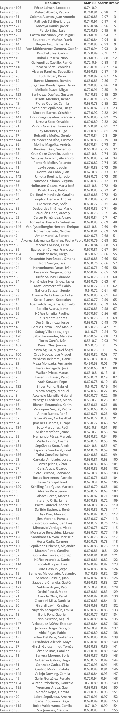
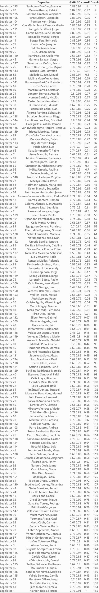
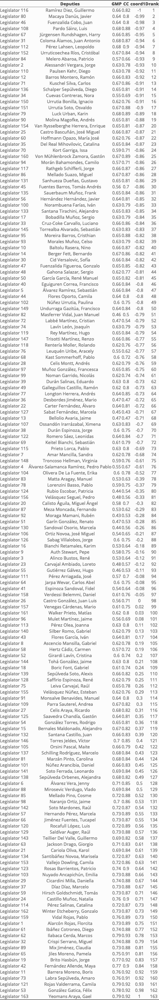

It is worth highlighting the role of the committees not only in the way
they work, in which they incorporate participatory mechanisms so that
civil society can present its needs, points of view and interests, but
also in the expertise and specialized thematic focus of each committee.
Currently, in the Chamber of Deputies there are 27 working committees
with 13 Deputies participating in each committee. In the Senate there
are 27 standing committees with 5 appointed senators, and 11 special
committees with varying numbers of participants. The committees’ range
in subject matter from public security to emergencies, disasters and
firefighting.
The Chilean legislative process is conditioned by a strong
presidentialism, where the executive has control over some of the most
relevant legislative initiatives(Alemán & Navia, 2009; Linz, 1990;
Mainwaring, 1990; Siavelis, 2009). The current Chilean Constitution
defines the set of legal functions and rights of authority of the
executive as the exclusive initiative in certain matters, the power to
set priorities on certain bills at certain stages of their development
or at all stages through an emergency mechanism, the power to exercise
its veto over bills approved by Congress, and the exercise of regulatory
power in all matters that are not limited to the legal sphere. In this
sense, in Chile, the presidential decree is one more tool of the
legislative technique for the executive to establish which lines of the
legislative process are its own, among other reasons, due to the greater
technical capacity of the ministries with respect to the
legislators.Moreover, throughout the legislative process, political
negotiations tend to take place mainly through formal or informal
meetings and committee negotiations. Also, initiatives tend to find
their genesis in the executive branch rather than in interactions
between congressmen.
Finally, in the legislative production process, Chilean legislation
contemplates four types of quorums: ordinary legislation is approved
with a simple majority; qualified quorum laws require the affirmative
votes of the majority of the members of Congress in office; organic
constitutional laws require four-sevenths of the members of Congress to
be approved; and laws interpreting the constitution must have
three-fifths of the members of Congress in office. Finally,
constitutional reform bills require the approval of three-fifths, or
three-thirds, depending on the chapter of the Constitution to be
modified (Aninat, 2006).
The Chamber of Deputies consists of 155 members representing the 28
electoral districts. In 2018, 122 men (79%) and 33 women (21%) took
office. 56% of the elected Chamber was opposition (87) and the remaining
44% pro-government (68). The party configuration can be seen in Figure
1, being the majority party RN with 34 deputies and the minority parties
PPR, PP and PEV with 1 deputy each.

1.1 Social Outburst and SARS-COV-2 Pandemic
With the purpose of demanding social rights, thousands of people protested in Chile on October 18, 2019. Sectoral protests had already shaken the social and political landscape of Chile, highlighting the “Penguin Revolution”, the student mobilization in 2006 and several high school student marches in 2011, so the mobilizations of 2019 was not an unprecedented event in the recent history of Chile.
The October 2019 demonstrations originated from the public transportation hike which prompted high school students to demonstrate in the subways of Santiago. These activities spread throughout the country and culminated on October 18, 2019 in a nationwide revolt that ended with more than 30 dead, more than 3000 injured and 70 subway stations set on fire and vandalized according to government sources. Protests intensified during the following weeks, adding new social demands and more people across the country, reaching its climax on October 25, 2019, with a citizen protest that, according to official sources, summoned more than 1,200,000 people.
Faced with the political, representation and institutional crisis, the Chilean political class came together in the Agreement for Peace on November 15, 2019, in which representatives of the political parties agreed to respond to the citizens’ demand for the drafting of a new constitution for Chile. Although the constituent process resulting from the agreement did not result in a new constitutional text, it is clear that the social outburst prompted the idea of new public policies and legislation that sought to respond to citizen demands. Although many of the demands of 2019 remain valid to this day, on March 3, 2020, the first case infected with the SARS-COV-2 virus arrives in Chile, which focuses citizen, political and media concerns towards the imminent health crisis; so the demonstrations of 2019 pass to the background.
Since the Chamber of Deputies has, among its responsibilities, the role of representing the citizenry, it had a preponderant role during the institutional crisis of 2019 and the health crisis resulting from the SARS-COV-2 pandemic. This paper aims to reveal whether there were changes in the ideological spectrum in the Chamber of Deputies and how the social outbreak and the pandemic influenced them. The hypothesis is that, given the significant changes in the political agenda, the ideological spectrum was modified between the period before, during and after the social outbreak. To this end, a brief review of previous works on the state of the art in the study of congresses was carried out, followed by a description of the main functions and characteristics of the Chilean Congress, a brief descriptive review of the composition of the Chamber of Deputies, and finally, the median voter theory was used to compare the ideological distribution in the three periods.
1.2 Congresses
Congresses are crucial institutions for the proper functioning of democracy. Among their main functions are the representation of citizens (Izquierdo Pinos, 1986; Navarro, 2006), legislative production (Casar, 2014; Visconti, 2011) and the control and supervision of the proper functioning of the executive branch (Gamboa, 2006; Lizárraga Valdivia, 2019; Llanos, 1998).
In this sense, the role of congressmen should be to work towards the representation of the common interest under the condition of a rational division of labor and the participation in the activities of control of the state with the greatest possible transparency (Kirkland & Harden, 2022); in addition to the production of legislation according to the needs of citizens.
Studies of congresses have been approached from a number of different perspectives; understanding the legislature as the aggregator of the activities of co-legislating bodies, including the executive branch, and considering the impact and influence of other groups and organizations outside government, such as parties, political leaders and interest groups. Also, from a systemic perspective, thinking of congresses as a set of actors with responsibilities and regulated by informal rules and norms.
The study of legislative processes, as in the field of public policy, distinguishes between the positive agenda, dedicated to the production of new regulations, on the one hand, and the negative agenda focused on the control of other powers(Cox & McCubbins, 2005; Krehbiel & Meirowitz, 2002). Another element that stands out in the framework of legislative dynamics is the influence of external factors that impact on the timing, procedures and design of regulations (De Echave, 2016; Puente Martínez & Cerna Villagra, 2017; Sanchez, 2014).
Finally, one school of thought focuses on the study of congressional decision-making processes. In particular, the median voter theory interprets congresses as collegial bodies with a certain ideological disposition and argues that voters’ preferences are unimodal, meaning that voters choose the alternatives closest to their preferred outcome. In this way, the theorem seems to explain some of the behavior that occurs in democratic majority voting systems (Carey, 2002; Grofman et al., 2001; King, 2001, 2003).
1.3 How the Chilean Congress works and its configuration in the period 2018-2022
2. methodology
2.1 Median Voter Theory and techniques
3. Results
3.1 Pre social outburst period
3.2 During social outburst period
3.3 SARS-CoV-2 pandemic period
4. Discussion and future challenges
5. References
6. Annexes
6.1 Ideological estimation pre social outburst period

6.2 Ideological estimation during social outburst period

6.3 Ideological estimation during SARS-CoV-2 pandemic
